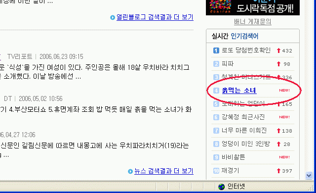
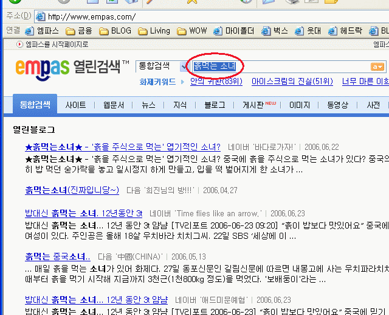
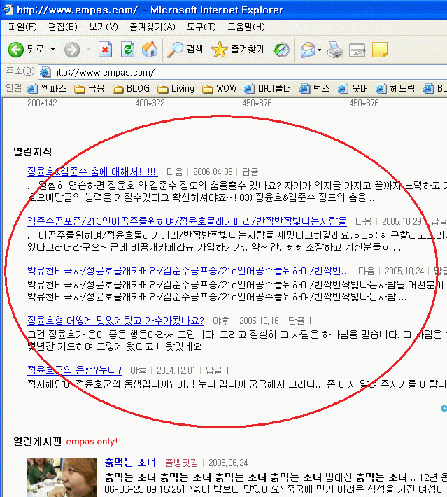
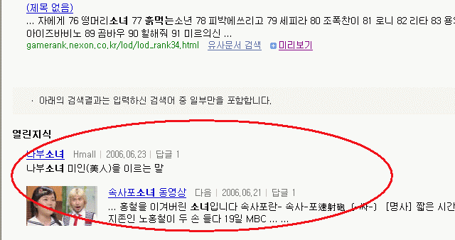

실시간 인기검색어의 '흙먹는 소녀' 를 클릭.

'흙먹는 소녀' 검색결과.

열린지식에 검색 된 것은???
'흙먹는' 도 '소녀' 도 없다.
열린지식이 오래전 자료만 남아서 '흙먹는 소녀' 는 검색되지 않더라도
'소녀' 는 검색되어야 하는거 아닌가?
열린지식 검색결과에는 온통 '정윤호' 에 대한 내용 뿐이다.
혹시나 해서 다시 한번 검색어 창에 '흙먹는 소녀' 를 직접 입력해 봤더니 이번엔 정상적으로 열린지식에 '소녀' 에 대한 검색결과가 표시됐다.

실시간 검색어에서 '흙먹는 소녀' 를 클릭하면 '열린지식' 검색에는 반영되지 않는다는 것.
뭐야.. 그냥 버그 래포팅인가...